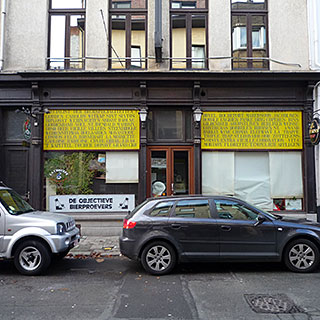

Kulminator

Vleminckveld 32, Antwerp, 2000, Belgium 03 232 45 38 51.214549, 4.403216
The only place for the serious beer-drinker in Antwerp
Kulminator is from that rare breed of specialist beer pub that combines a truly impressive menu and an atmosphere unmolested by any kind of change in recent decades, resulting in a calm quiet environment to enjoy the best and most varied selection of beer in town. Outside Belgium, and to a lesser degree the Netherlands, this kind of place is very rare.
The menu features a very large beer selection, including plenty of unusual draught beers, large 75 cl bottles to share, and even vintage bottled beer. Food, such as it is, consists of portions of cheese or meat to accompany the beer without unduly distracting attention from it.
The service is quiet and friendly, with just the slightest feeling that the beers and the proprietors deserve more respect than mere customers, which is reassuring if you are used to the idea but can be somewhat disconcerting if you are expecting fast or obsequious service.
It is perhaps fortunate that Kulminator is not always open all day, given the result of spending too long there. It opens around 8 pm on Mondays, noon for the rest of the week, 5 pm on Saturdays and not at all on Sundays. It is also fortunate that it is not right in the centre of the old town, and easy to mistake as somewhere that has closed down, from the otherwise uninteresting street, so it is unlikely to be completely full.